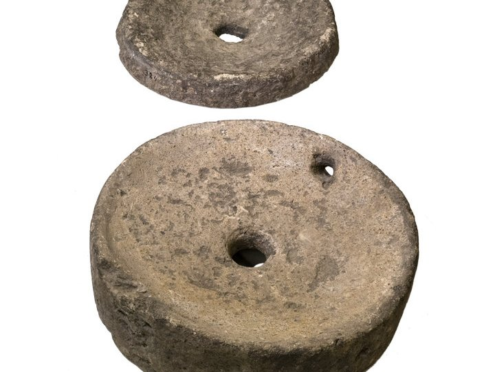

Romeinse maalstenen

Ga naar plattegrond van offerschatten
Romeinse maalstenen uit Haaksbergen. Deze twee maalstenen dateren uit de Romeinse tijd, tussen de 1e en 3e eeuw na Christus. Ze zijn in 1933 gevonden op 2,5 meter diepte in het Haaksbergerveen. De stenen zijn gemaakt van basaltlava, een hard gesteente dat geschikt is om graan te malen. De set bestaat uit een onderligger met één gat en een bovenligger met twee gaten. In het kleine gat zat een handvat. Door de bovenste steen rond te draaien, werd het graan tussen de stenen fijngemalen. Het meel kwam langs de rand naar buiten. Dit soort handmolens was onmisbaar in het dagelijks leven voor het maken van brood en pap.